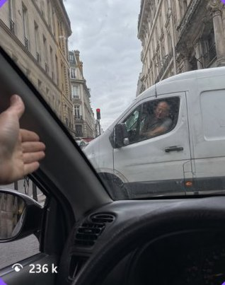
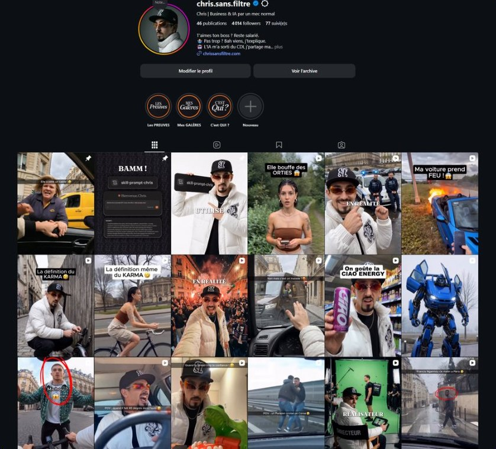
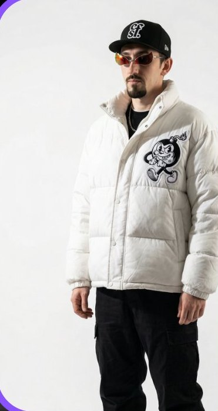
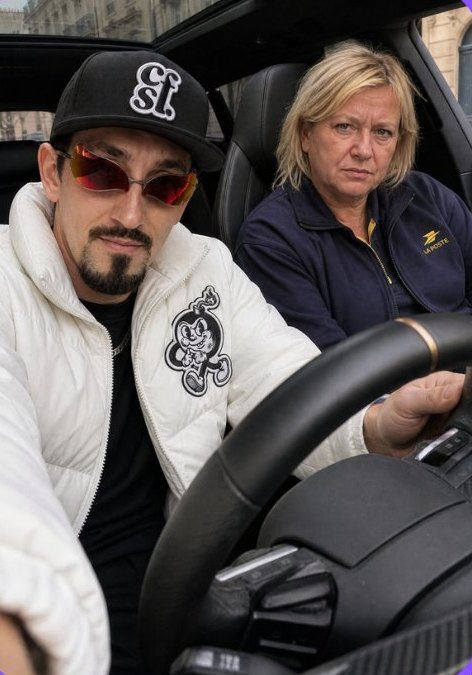
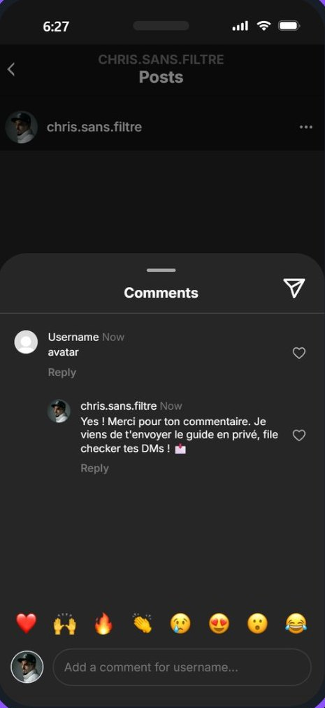

1La viralité
La viralité, c'est la clé de tout.
Tu scrolles tous les jours sur TikTok, Reels, Shorts, et je suis persuadé que certaines vidéos t'arrêtent net.
- Un conflit dans la rue.
- Un visuel qui accroche.
- Une scène qu'on n'a jamais vue.

Une de mes vidéos, 100 % générée par IA : 236 k vues.
Le but, c'est que ce soit TON contenu qui fasse stopper les gens.
2Sans te montrer
Sans te montrer.
La plupart pensent qu'il faut être à l'aise devant une caméra.
Qu'il faut une belle tête. Du matos. Du montage.
Moi, j'ai trouvé un autre moyen.
Mon avatar IA poste à ma place.

Je n'apparais jamais. Et ça marche quand même.
3L'avatar IA
L'avatar IA.
Une fois que tu as le bon concept de vidéo, tu utilises des outils IA pour générer les visuels.


C'est lui qui « joue » dans tes vidéos, à ta place.
Ton visage ne sera jamais visible.
Mais ton contenu, lui, sera partout.
4L'automatisation
Le système qui redirige automatiquement.
Une fois la vidéo postée, les gens qui veulent en savoir plus tapent un mot-clé en commentaire ou en DM.
Tu l'as toi-même fait pour récupérer ce guide.

Ce mot-clé active une automatisation qui renvoie directement vers tes produits. Sans que tu aies à répondre à qui que ce soit.
5Le timing
Pourquoi maintenant ?
Les avatars IA en sont encore à leurs débuts. Il y a encore peu de compétition.
Les algorithmes poussent ce type de contenu en ce moment.
Ceux qui se lancent aujourd'hui prennent 6 mois d'avance sur les autres.
T'as la théorie.
Et après ?
Ce guide t'a donné la méthode pour faire des vues.
Mais entre l'idée et la vidéo postée, il reste tout le boulot : le script, les prompts, les générations, le montage dans CapCut, les sous-titres, les bruitages. Des heures, pour un seul Reel.
Le studio bosse en automatique.
Toi, tu valides.
Une appli sur ton ordi. Tu tapes ton idée : elle écrit, génère et monte ton Reel dans CapCut.
▼ Ce Reel, le studio l'a monté en automatique ▼
- Tu choisis ce que tu veux créerUn Reel, un carrousel, des stories. Le studio te guide étape par étape.
- Le studio écrit et découpe toutScript, voix, plans, prompts. Ton accroche reste mot pour mot.
- Ton Reel s'ouvre monté dans CapCutPlans, sous-titres mot à mot, voix, bruitages, musique : t'as plus qu'à exporter.
En bonus avec le studio : mes deux formations, AI AVATAR System et AI Cinema Studio.
Découvrir MOSAIC Studio →